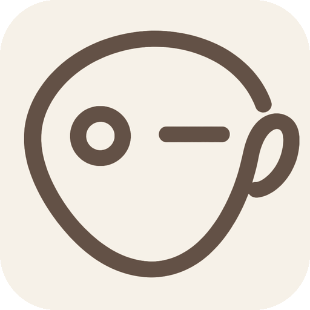

Brand mark · the winking blot-creature

Gene mnemonics
ICONOPLASM
One continuous hand-drawn loop: an eye (o), a dash mouth (-), a tail — a gene as a character, drawn in the same rough loop as the ellipse highlight.